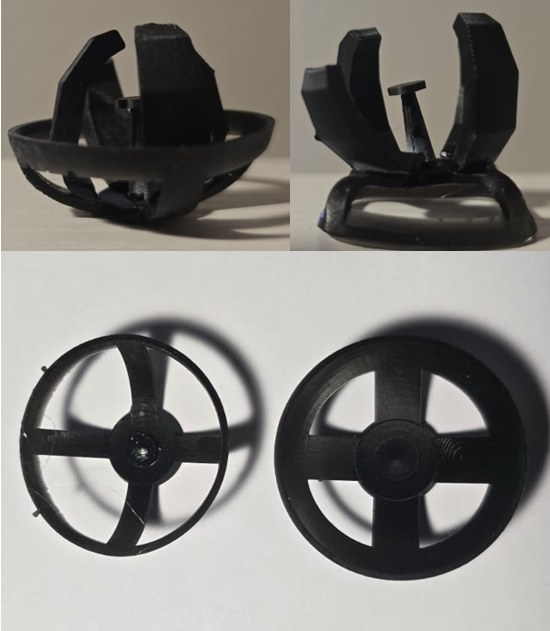

Bistable Magnetic Gripper

What I did
- Defined the design targets from colon anatomy and the limits of the external magnetic coil platform
- Designed, printed and tested 8 iterations of a bistable shell with passive gripper prongs and embedded magnets
- Built an FEA pipeline and two custom test rigs to measure snap-through and grip force, and found the force–scale law that guides miniaturisation
Most minimally invasive surgery tools are tethered to the surgeon by rigid shafts and cables, which limits dexterity in winding anatomy like the colon and transmits unwanted force to delicate tissue. This thesis designs a tetherless gripping device that can be steered and triggered by external magnetic fields under fluoroscopic guidance.
The device is a bistable compliant shell with passive gripper prongs. Like a snap-dome, the shell has two stable shapes, open and closed, and a small push flips it between them. Once closed, it holds tissue with no continuous energy input, so the magnets only need to supply the brief force to trigger the snap.
Problem Statement
- Tethered tools: polypectomy and traction tools reach the colon through rigid shafts and cables, limiting dexterity, depending on line of sight and pushing force into delicate tissue
- No room for motors: a tetherless device this small cannot carry motors, batteries or pneumatics, so gripping must be passive
- Weak external magnets: the MagnetoSuture-style coil platform can only apply about 1.34 N to an embedded magnet, far less than a typical gripper needs to close
So the real test was whether a passive gripper could hold tissue firmly (2–5 N) yet switch states with less force than the magnets can supply.
Design targets for a colonic polyp application
| Parameter | Requirement |
|---|---|
| Overall device diameter | ≤ 22 mm |
| Overall device length | ≤ 22 mm |
| Required actuation force | ≤ 1.5 N |
| Required gripping force | 2–5 N |
Conceptual Design
Inspired by passive bistable-shell grippers that close on contact, the device integrates four elements into one compliant body. A contact pad at the centre touches the target first; pushing on it everts the shell so the prongs wrap around the tissue. Magnets on the rim let external coils orient the device and trigger the snap without any physical contact.

Methodology
Each design was fabricated, simulated and measured, and the results fed the next iteration. Click a stage to jump there.
Materials & Fabrication
Two flexible-material routes were tried. Ecoflex 00-30 silicone was cast in two-part 3D-printed moulds; a ratio sweep from 10:90 to 90:10 settled on 70:30, but curing took over 48 hours in the closed mould and needed multi-stage pours. F80 flexible resin printing was much faster to iterate, so it became the main process, with a tuned washing and curing routine.


Lessons Fabrication takeaways
- Silicone ratios below 40:60 never fully cured; stiffness rose roughly linearly with Part A
- Spill-over ridges in the mould handled silicone expansion; vacuum degassing would remove trapped air
- Washing resin parts before removing supports cut tearing, since supports were hard to see and the uncured part was soft
- Rotating parts every 10 min in the IPA bath and every 7 min under UV gave more uniform results
- A worn release film or dirty wash bath caused surface defects and hardened artefacts
Finite Element Analysis
The first printed concept would not hold its second state, so I built an FEA model to understand what makes the shell bistable. The F80 resin is modelled as a Neo-Hookean hyperelastic solid in CalculiX, and an implicit dynamic solver carries the simulation through the snap-through point that a static solve cannot pass. Material constants come from the data sheet and were never tuned to match experiments.


Setup FEA settings
| Quantity | Value |
|---|---|
| Material model | Neo-Hookean hyperelastic (F80 resin) |
| C10 / D1 | 1.54 MPa / 0.053 MPa−1 |
| Initial modulus / Poisson | ~9 MPa / ~0.46 |
| Elements | C3D10 quadratic tetrahedra, 1.5 mm (checked at 0.8 mm) |
| Nodes | 13,708 – 44,830 |
| Solver | CalculiX 2.21, implicit dynamic, HHT-α = −0.3 |
Test Rigs
I designed and built two rigs on an optical table. The actuation rig, inspired by a universal testing machine, loads the shell with slotted weights until it snaps; its holder cut-out removes ground reaction forces, and a second weight holder was made 165 g lighter so it wouldn't trigger shells on its own. The grip rig hangs weights from a gripped phantom until it slips, converting mass to force with F = mg.


Design Iterations
Eight iterations traded off three things at once: staying bistable, surviving repeated snapping, and needing less force. Adding a flexure halved the force but tore the rim; fillets fixed the tearing but raised the force; trimming the magnet lip to four arcs, tuning the depth and finally cutting four quadrants out of the shell brought it down to 1.93 N.

| Iteration | Key change | Measured (N) | FEA (N) |
|---|---|---|---|
| 1 | Concept | n/a | No snap |
| 2 | Magnet housing, bistable dimensions | 14.23 | 12.66 |
| 3 | Flexure in shell (rim sheared) | 6.77 | 6.00 |
| 4 | Fillets for durability | 8.27 | 8.00 |
| 5a | Magnet lip to cavities | 12.57 | 11.70 |
| 5b | Magnet lip to 4 arc sections | 7.27 | 6.36 |
| 6 | Depth tuning, PLA prongs bonded | 3.77 | 6.00 |
| 7 | Quadrants removed from shell | 1.93 | 1.67 |


Why Why FEA over-predicted Iterations 6 and 7
From Iteration 6 the prongs and contact pad were rigid PLA bonded to the resin shell, while the FEA modelled the shell alone. Earlier, softer prongs absorbed some of the load before it reached the shell; rigid PLA passed it straight through, so the real device snapped at a lower force than predicted (37% and 16% error). Future models should include the bonded parts.
Magnetic Actuation
The device is driven by a MagnetoSuture-style system: four planar coils steer it and a fifth coil pulls downward to trigger the snap. MATLAB sends coil currents to an Arduino, which drives the coils through PWM motor drivers. A single set of perpendicular magnets gave both planar motion and state flipping in bench-top tests in air This proves the actuation idea, not a finished locomotion system.


Gripper Prong Design
Four prong designs were tested on hot-glue phantoms shaped like a cylinder, ascending and descending cones and an irregular polyp. Design 4 was the only one to grip all four and held the most weight, so it was carried forward; Iteration 7's revised prongs then doubled its grip force.


| Design | Cylinder | Desc. cone | Asc. cone | Polyp | Grip (N) |
|---|---|---|---|---|---|
| Gripper 1 | No | No | Yes | No | 0.00 |
| Gripper 2 | Yes | No | No | Yes | 0.03 |
| Gripper 3 | No | Yes | Yes | Yes | 0.07 |
| Gripper 4 | Yes | Yes | Yes | Yes | 0.36 |
| Iteration 7 | n/a | n/a | n/a | n/a | 0.69 |
Results


Testing the shell at 0.5×, 0.75× and 1.0× size showed the snap-through force follows a power law, F* ∝ scale1.44, so it drops faster than linearly as the device shrinks. Extrapolating suggests further, achievable miniaturisation below 0.5× would bring the force under the coil platform's 1.34 N limit without a new shell design.
Findings Key findings & limitations
- Repeatable bistable snap-through and measurable holding force on all phantom shapes
- FEA matched single-material shells within 3–15% and exposed the failure modes before printing
- The actuation gap is a geometric scaling problem, not a limit of the bistable concept
- Limitations: current prototypes are larger than the clinical target, the coils can't yet trigger them alone, and grip force is below the 2–5 N target
- The scaling law rests on three sizes and still needs testing at capsule scale
Next Future scope
- Multi-material prints: stiffer prongs on a compliant shell, with aligned reinforcing strips
- Full-assembly FEA including the bonded prongs and gripper–tissue contact
- A stronger coil platform (VORIACS) and fluoroscopy-based closed-loop control
- Prong add-ons: tactile sensing, liquid-metal cautery coils and drug-eluting micro-grippers
Team Contributions & credits
M.S. thesis, Johns Hopkins University (2026). Advisor: Prof. Axel Krieger (IMERSE Lab); academic advisor: Prof. Jeremy D. Brown.
Guidance from Dr. Anuruddha Bhattacharjee and Ph.D. candidate Xinhao Chen; support from Prof. Yancy Diaz-Mercado and Ph.D. candidate Noah Barnes.
The Hardest Part
The hardest part wasn't any single iteration. It was finding the right scale for the device, and working out which way of making it actually behaved the way the design needed. Silicone casting, F80 resin printing and the resin-and-PLA composite each changed the snap-through force, and the composite even pulled the FEA off by more than a third. Choosing between them, and then deciding how small to go, took more trial and error than any of the geometry changes.
Full Report
Full thesis: Conceptual Design of a Tetherless Bistable Gripping Device for Minimally Invasive Procedures.